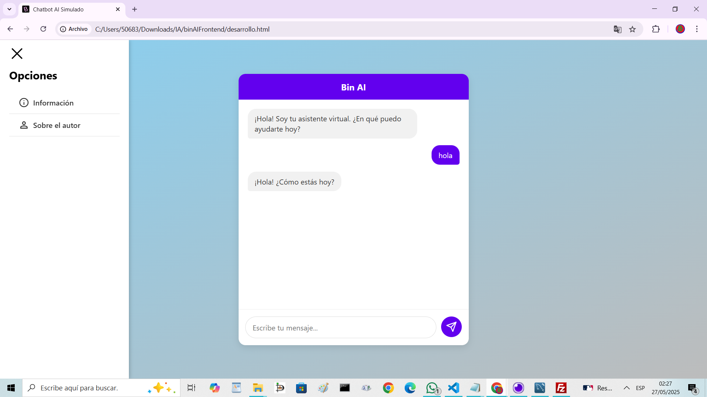
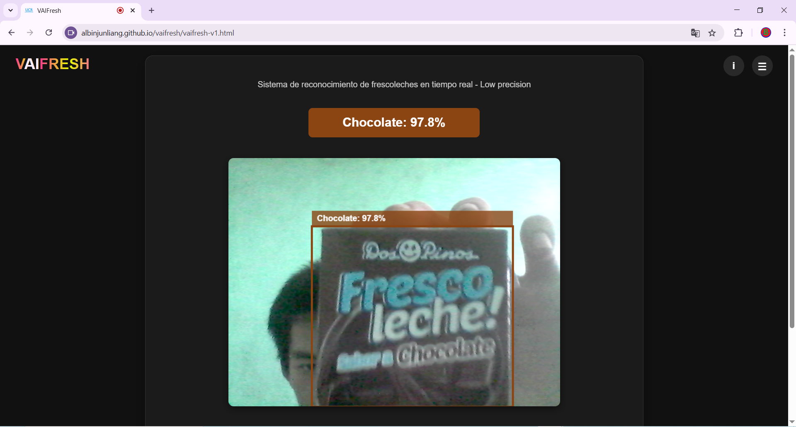
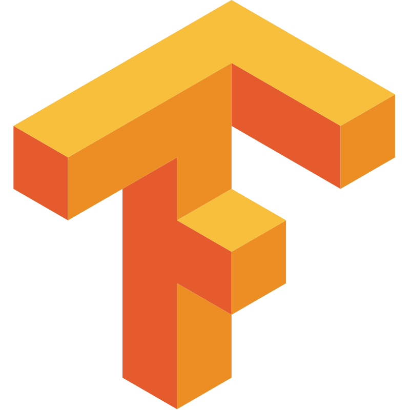
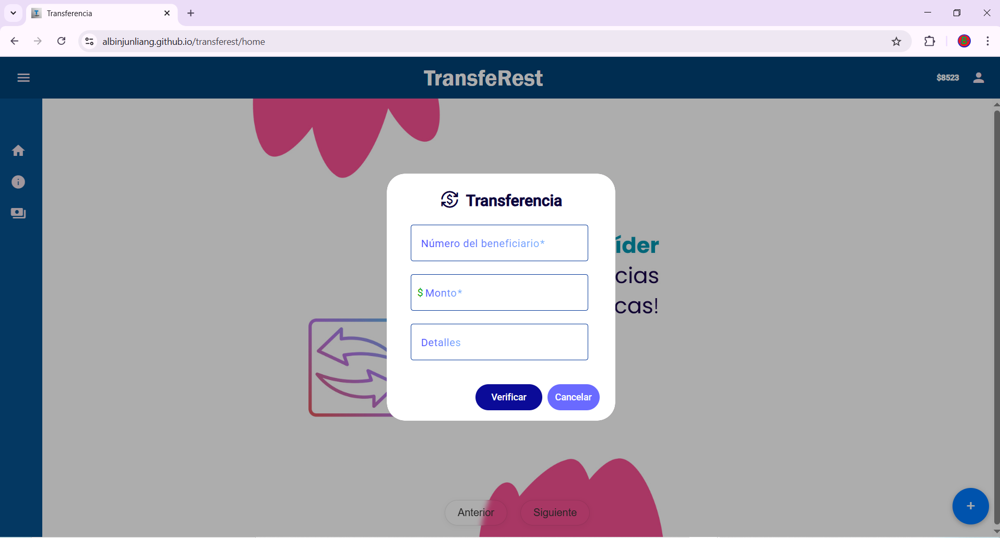
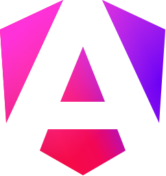
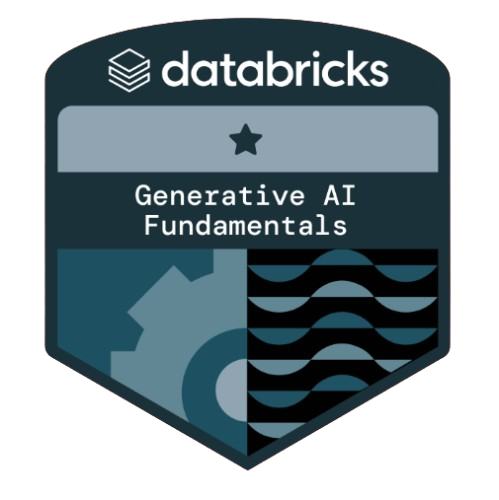
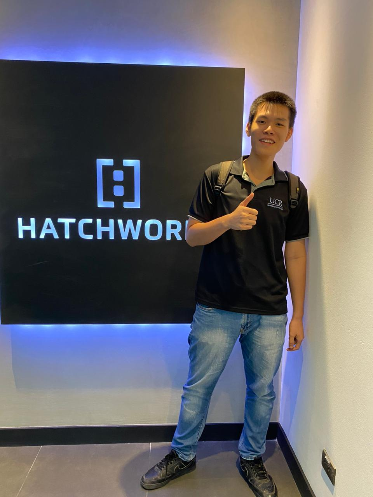
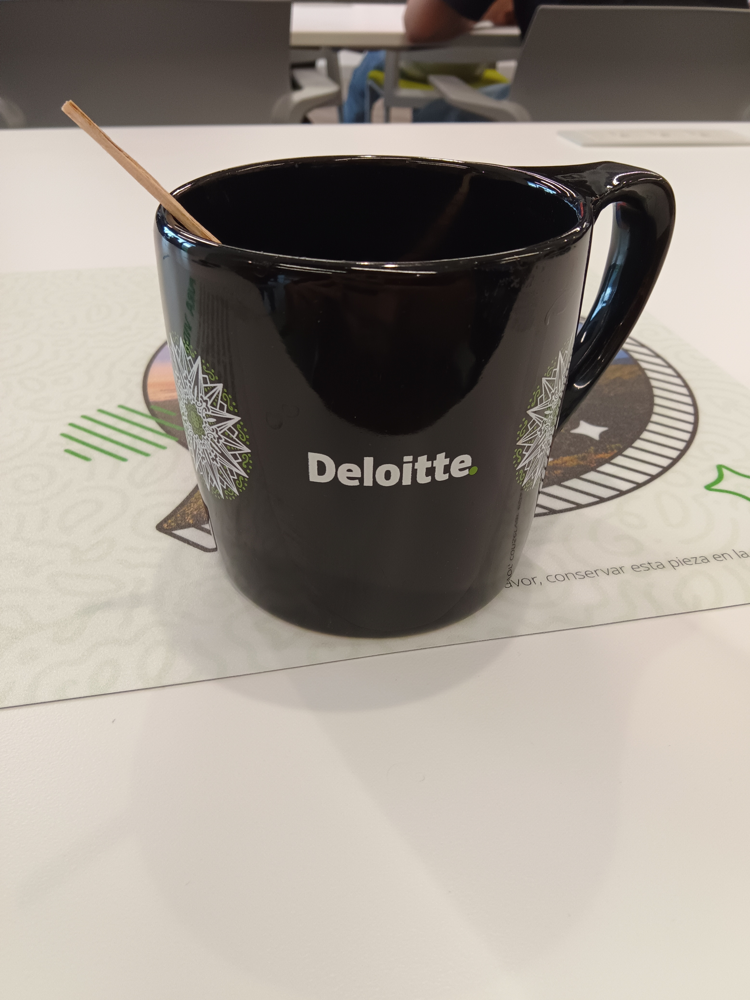
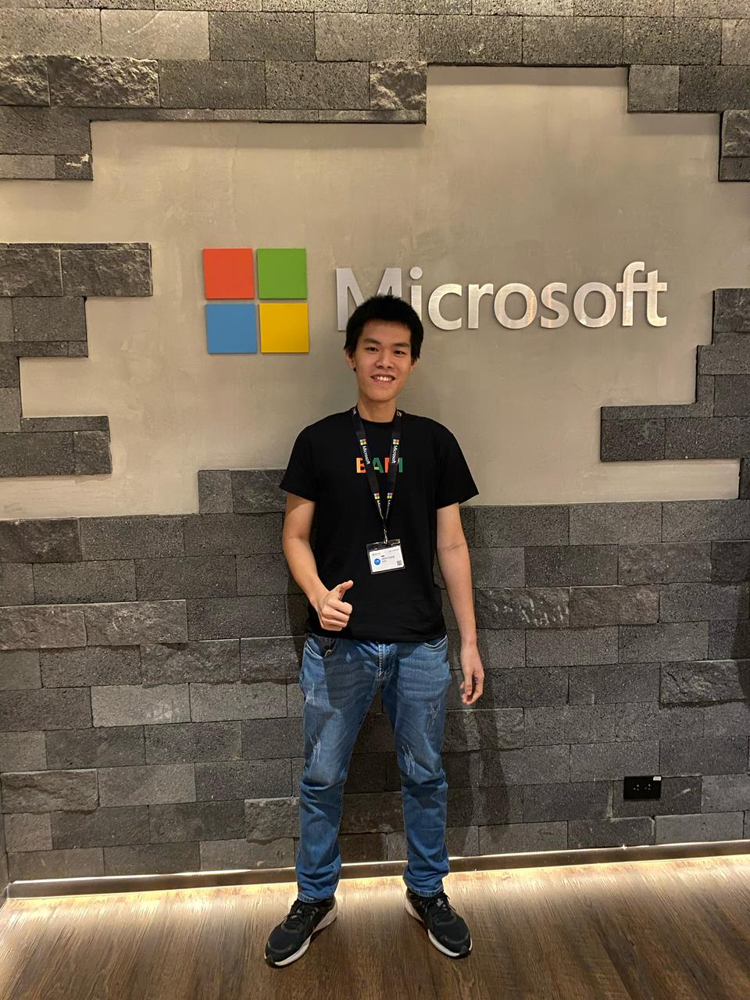

Hi! I am Albin Liang
liangalbin9@gmail.com

I am a Business Informatics student at the University of Costa Rica, specializing in software solutions and projects using technologies such as C#/.NET Core, MEAN Stack, SQL, Linux, Java, and Python.
Work Experience
Full-Stack Developer
Acción Social, Universidad de Costa Rica January 2024 – Present- Designed and developed an interactive web app for road safety education, allowing users to practice theory through simulated tests.
- Built with Supabase and Node.js for the backend, and Angular 18 for the frontend.
- Implemented user authentication and an admin dashboard for content and user management.
Full-Stack Developer
DeliciasLyn September 2024 – December 2024- Created a web store for a pastry shop with product browsing, orders, and tracking.
- Developed the backend using MySQL, Express.js, and Sequelize with user and order management.
- Built the frontend with Next.js and Tailwind CSS, including a dessert catalog and admin panel.
- Worked in a team using Git and agile methods to ensure clean and efficient code.
Projects

Bin AI
The Bin AI chatbot is a web application designed as a type of RAG (Retrieval-Augmented Generation) to provide information about me. Its purpose is to offer a basic summary of my academic background, work experience, skills, and other relevant details for potential job or academic opportunities. Additionally, it can answer general questions. The AI model used is 'Gemini-1.5-flash' from the free tier.

VaiFresh

TensorflowVaiFresh is an application that uses a convolutional neural network (CNN) trained by myself to identify flavors of Frescoleche, which is a type of drink (Strawberry, Chocolate, Vanilla). The training was done with the support of tools like MediaPipe, Google Colab, and notebooks.

TransfeRest

AngularA web application was developed to simulate money transfers with real-time notifications using WebSockets. The goal of the system was to explore a solution that enables communication between different databases, emulating a distributed system between banking entities. However, the deployed version currently supports users from a single bank only.
Languages
Skills
Technical Skills
Other Skills
Soft Skills
Certifications and Courses
Academy Accreditation - Generative AI Fundamentals
Databricks Academy Issued May 2025- Fundamentals and types of generative artificial intelligence, including language and image generation models.
- Practical applications of generative AI in various business scenarios and contexts.
- Best practices, ethics, and evaluation of generative AI model performance.

Scrum Foundation Professional Certification - SFPC™ !
Certiprof Issued March 2024- Entry-level skills and fundamental knowledge of the Scrum framework.
- Understanding the three empirical pillars of Scrum: transparency, inspection, and adaptation.
- Focus on Sprint work to achieve continuous progress toward project goals.

MongoDB Aggregation Fundamentals
MongoDB University Issued May 2025- How to build aggregation pipelines to efficiently process, transform, and analyze data in MongoDB.
- Understanding the correct ordering of stages within an aggregation pipeline to achieve accurate results.
- Techniques to optimize aggregation pipelines and improve query performance in MongoDB.
About Me
Business Informatics Student & Developer
I'm Albin Liang, a passionate developer specializing in full-stack solutions. Currently studying Business Informatics at the University of Costa Rica, I combine technical skills with business understanding to create impactful applications.
My academic visits during my studies


